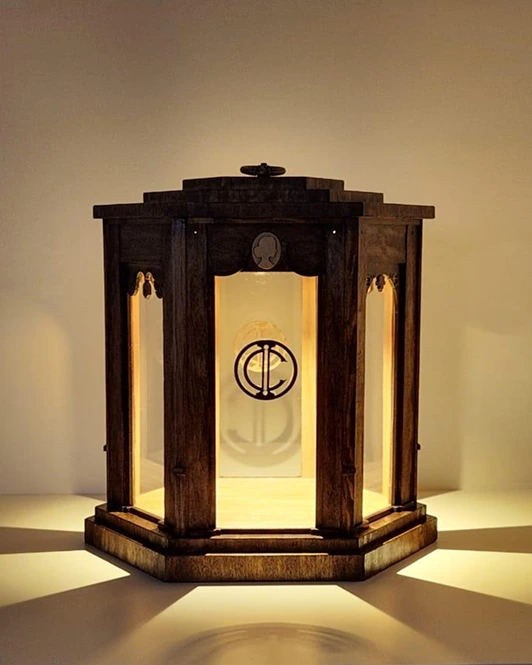
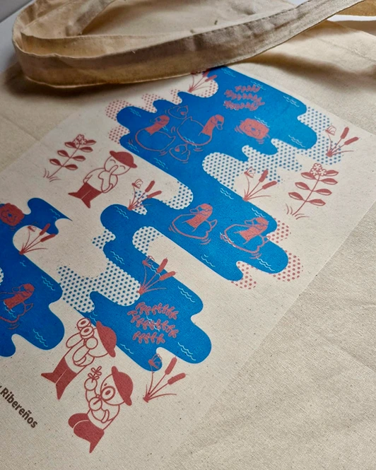
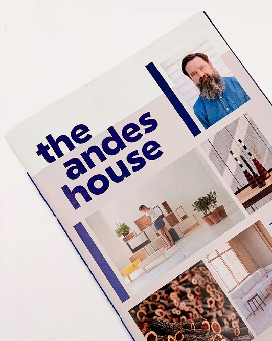

DiseñoPlanComúnDiseñoPlanComúnDiseñoPlanComúnDiseñoPlanComún
DiseñoPlanComúnDiseñoPlanComúnDiseñoPlanComúnDiseñoPlanComún

Luz para la Nación

Set de Timbres

Revista The Andes House
DiseñoPlanComúnDiseñoPlanComúnDiseñoPlanComúnDiseñoPlanComún
DiseñoPlanComúnDiseñoPlanComúnDiseñoPlanComúnDiseñoPlanComún